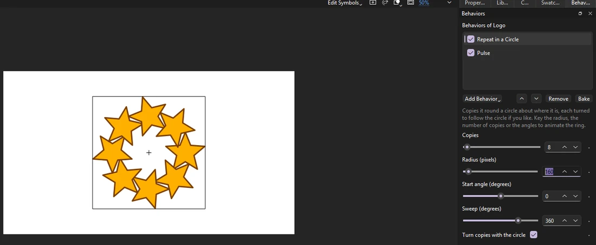
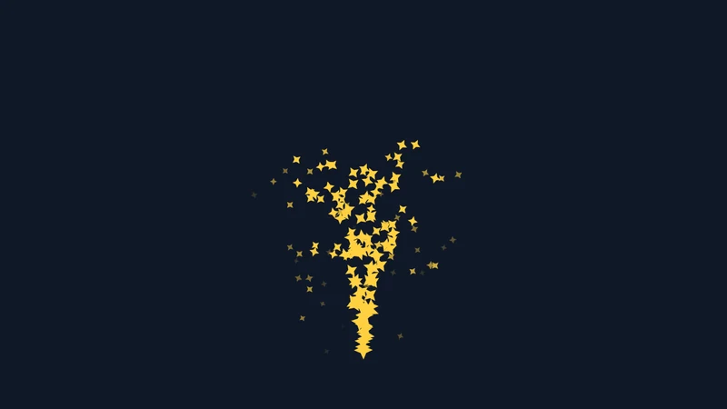
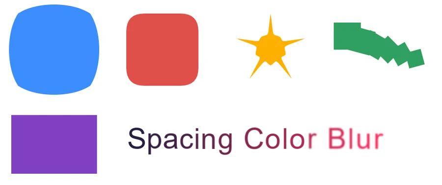

Animation
Motion graphics
Some animation is better worked out than drawn: a logo that pulses, a crowd hopping out of step, a line drawing itself on, a title arriving letter by letter, sparks, a wipe. Phoenix does these for you, frame after frame, from settings you choose in panels. There is no code to write, and nothing is fixed until you want it to be.

What you can do
| To | Use | On |
|---|---|---|
| Move, turn, scale or fade something by itself: wiggle, oscillate, spin, pulse, blink, loop, follow with lag, jiggle | Behaviors | A symbol instance |
| Make many from one: rings, rows and grids, along a path, scattered in a shape, a crowd out of step | Repeat behaviors, Effector, Stagger | A symbol instance |
| Sparks, snow, bubbles, confetti | Particles | A symbol instance |
| Follow another object, a master controller's slider, or the loudness of the soundtrack | Look At, Link to Object, Link to Controller, Follow Sound | A symbol instance |
| Draw a line on or off; make outlines boil, wave, puff up, round off or repeat | Shape operators | A drawn shape |
| Bring a title in letter by letter, scramble it, wave it, space it out, color or blur its letters | Letter animators | A text field |
| Show a layer through the one above it, soft edges and all; blur, color-correct or tint everything below | Track mattes and adjustment layers | A layer |
| Make one design serve many names and colors, and render a movie for each row of a spreadsheet | Templates | A symbol |
| Drive many things from one place: a dial that turns every gear, one color for a whole title | Controls on a null, Link to Control | A symbol instance |
| Bars and lines that dance to the soundtrack | Audio Spectrum, Audio Waveform | A symbol instance |
| Slow a graphic down, freeze it or run it backwards, blending frames for smooth slow motion | Time Remap | A graphic instance |
| Move something along a path you draw by hand as the movie plays | Motion Sketch | A symbol instance |
| Marching-ant dashes, tapered brush strokes, gradients along lines; twist or merge shapes | Dashes, Taper, Twist, Merge Paths | A drawn shape |
| Run words along a curve; flip, blur or change them in; ready-made letter animations | Text on a Path, Flip In, Blur In, Source Text, presets | A text field |
| Glow, blurs, gradients, noise, ripples, color grading, vignettes, wipes and dissolves | Adjustment effects | An adjustment layer |
| Smear fast motion, leave a trail of earlier poses, or animate on twos | Motion blur, Echo, Posterize Time | A layer |
| Soften, grow or invert a mask; stencil and silhouette layers | Mask Edge, Layer Mode | A layer |
| Shade turned 3D cards with a light; blur what is out of focus | 3D lights and depth of field | A movie clip |
| Stretch a bar to fit a name, pick from lists and checkboxes, keep intros and outros timed | Template fields and fitting | A symbol |


Recipes
A few looks put together from the pieces above, each a minute or two of work:
- A neon sign
- Put the sign's art under an adjustment layer with Glow, and give the sign's instance Blink with At random ticked and a high rate for a faulty flicker. Or open Add Behavior › Browse Presets... and pick Flicker.
- A comet with a trail
- Tween a small bright shape across the stage, then on its layer turn on Motion Blur and, from Echo and Posterize Time..., 6 echoes every 2 frames keeping 60%.
- Marching ants around a selection
- Draw a rectangle with no fill, add the Dashes shape operator, and key its Offset from 0 at the first frame to 100 at the last.
- A title that comes into focus
- Add Add Animator › Presets › Blur In to the text field; for the whole picture, key an adjustment layer's Blur from 20 to 0.
- A rack focus
- Push movie clips to different depths with the 3D Translation tool, turn on depth of field in Lights and Depth..., and move the focus by keying the clips' Z, or swap which clip sits at the focus depth.
- A music video's bars
- Put the song on a layer, draw a bar with its registration point at its bottom, and give it Audio Spectrum; set Laid out to Circle for a ring round a logo.
- One dial for a whole machine
- Put an Angle Control on a marker, key it, and give each gear Link to Control with its own Amount: 100 for the big gear, -200 for one half its size turning the other way.
- A news ticker
- A dynamic text field with Source Text keyed to each headline, Slide Up from the letter presets, and a bar behind it pinned with Pin to Text so it fits each one.
- Smooth slow motion
- On a graphic, add Time Remap, key Frame shown from 1 to 24 over 96 frames, and tick Blend between frames.
How it works
- Settings, not keyframes. Each effect has a few settings. Change them and the stage shows the result at once, even while the timeline plays.
- Key the settings when they should change over time: the diamond beside a setting keys it on the frame shown, and Phoenix goes smoothly from each key to the next. A Trim Paths End keyed from 0 to 100 draws a line on; a Repeat radius keyed outward opens a ring. See Animate the settings.
- Effects add up, top to bottom in the panel's list, and their order matters: a Wiggle after a Repeat wiggles each copy its own way; before it, the whole ring wiggles together.
- The same every time. Random effects have a seed, so a scene plays, renders and exports the same on every machine.
- Your own behaviors. If something is missing, a behavior is a short JavaScript file; Add Behavior › New Behavior... starts one from an example. See Write your own behavior.
Keep it live, or bake it
Everything here is kept in your document as settings, so you can change it until the end. When you need ordinary animation instead:
- Bake in the Behaviors panel, or , turns the effects on the selection into keyframes you can edit by hand. Undo brings them back.
- Videos, image sequences, GIFs and SWF movies always show the effects as Phoenix draws them.
- writes a copy that other apps opening FLA files play the same way: behaviors and operators as keyframes, templates as symbol copies, mattes as masks, adjustment layers as filters. See Bake to keyframes.
Learn it step by step
Each part has a short lesson, inside Phoenix under and as a page here:
- Motion with behaviors and Write your own behavior
- A crowd from one cycle and Particles
- Draw-on lines and An animated title
- Track mattes and adjustment layers
- A bouncy antenna
- Lower thirds from a template
- Motion blur, echo and time
- Glow and wipes
- Dashes and text on a path
- A sound visualizer
- Controls on a null
- 3D cards in the light
- Motion Sketch
- A template that fits
AI assistants can set all of this up too; see AI assistants.